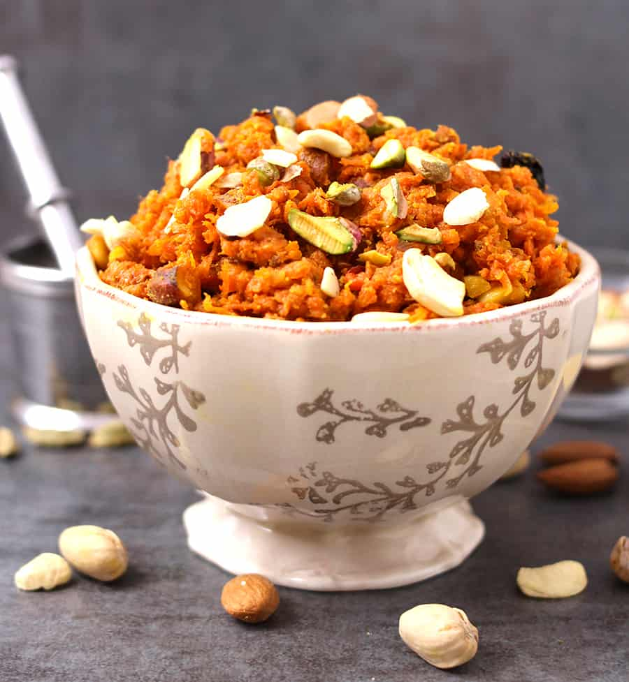

Halva
Halva refers to various local confection recipes in West Asia and its vicinity.The name is used for referring to a huge variety of confections, with the most geographically common variety based on toasted semolinaIn some styles of preparing halva, the grains are replaced with vegetables, fruits, or cheese. Alternative vegetable-based halva recipes popular in India and Pakistan use beetroots, potatoes, yams, and most commonly carrots (for gajar halwa), mung beans (for moong dal halwa), or bottle gourds (for doodi halwa) instead of semolina. Prepared with condensed milk and ghee, without semolina to bind it together, the end result has a moist, yet flaky, texture when freshly prepared.
Rice
Rice is the seed of the grass species Oryza sativa (Asian rice) or less commonly Oryza glaberrima (African rice). The name wild rice is usually used for species of the genera Zizania and Porteresia, both wild and domesticated, although the term may also be used for primitive or uncultivated varieties of Oryza.Rice, a monocot, is normally grown as an annual plant, although in tropical areas it can survive as a perennial and can produce a ratoon crop for up to 30 years.[3] Rice cultivation is well-suited to countries and regions with low labor costs and high rainfall, as it is labor-intensive to cultivate and requires ample water. However, rice can be grown practically anywhere, even on a steep hill or mountain area with the use of water-controlling terrace systems.